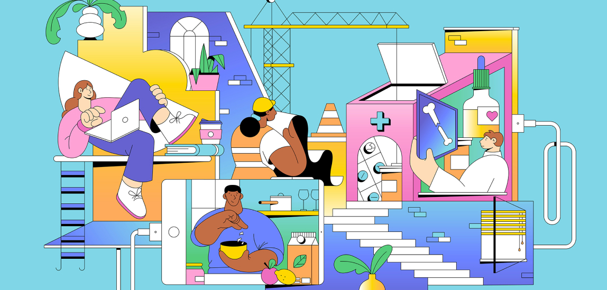
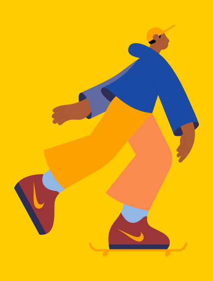
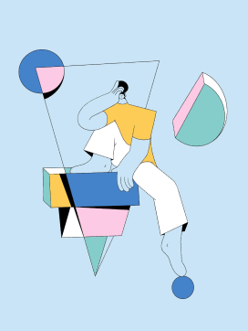
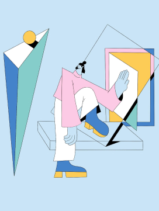
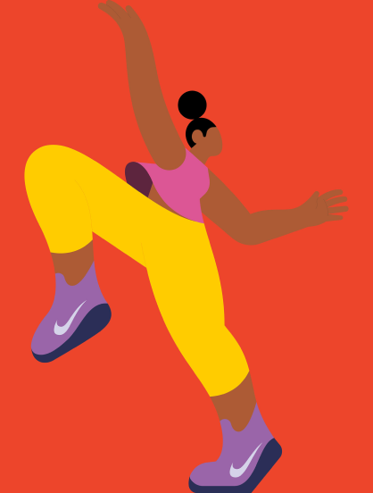

Swedish illustrator and animator Linn Fritz works in London and creates pastel imagery for editorial and commercial clients. Her Hyper Island experience changed her as a person and she believes digital drawing offers more freedom. Linn co-founded Panimation, an equality-driven community aiming to connect and support non-binary and trans friends in the animation industry.


